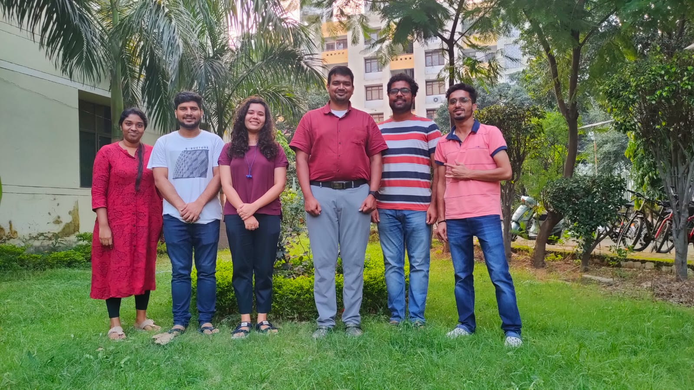

About Us
Exploring the fundamental mechanisms of mass movements to build resilient territorial early warning systems.

Sē~DiRe Group
We specialize in understanding mechanisms of post-seismic/aseismic landslides and debris flows induced by rainfall and snowmelt. We employ laboratory-scale experiments and process-based numerical modeling to analyze the stability of shallow slopes and the triggering of sediment disasters.
Our ultimate aim is to translate fundamental scientific understanding into real-time early warning systems operating at territorial scales to mitigate disaster risks.
Our Connections
We collaborate with leading institutions and government bodies globally.